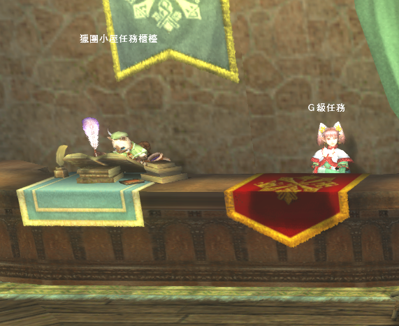
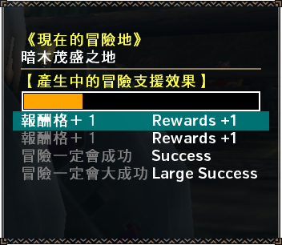

To talk to the Clan you need to set your chat to the proper mode, this is green with a pink flag! If you see anything else next to the input box you are in the wrong mode!
Local chat is only seen by people in the exact same area as you, if you are trying to talk to someone in the blacksmith in local they will not see anything you write!
New Players may need to leave the newbie clan before joining!
Select Clan in the menu, navigate to the second tab, hit Z on keyboard (X or Square on controller) and select Leave Clan to leave the clan.
Before you can talk to the NPC needed to join the clan you will first need to have completed the first couple of tutorial quests as detailed in the basics section. You will also need to have left the newbie clan (if applicable), as shouted above.
To join the guild you will first need to go to the Clan Management NPC:
Upon talking to him choose the first option, followed by the first option again and then the 3rd option (above the one containing ID).
This will produce a box in which you should be able to find a clan.
After choosing a clan, on the next page select the middle option and you should be set. This sends a request to join the clan and will need to be approved before you can be a member proper.
Clan chat should be displayed automatically and you can set yourself to talk in it by hitting Shift+Up/Down until the chat icon becomes a flag and the text becomes green.
If you are logged in when accepted you may need to relog in order to see guild chat proper.
Entering the Guild Hall is as simple as approaching its entrance and hitting confirm. This will take you into the Hall or - if someone is already in there - prompt you to change servers to the one that the Guild Hall is currently active on.
The Guild Hall has access to all but caravan quests from the pair of quest givers near the quest board.

There are a number of quests that are Guild Hall only, these either give or consume guild tickets upon being taken and have their own section. As well as these quests you can choose to take additional sub-goals on guild ticket quests. These are things such as being naked while hunting something or using no weapons. These the the only way to get Additional Task Tickets (新任務達成證) details on the additional goals is available here (JP).
The Guild Shop sells a number of items that are only available there, the most immediately useful of these being Spirit Mushrooms, 980z (鬼松茸) and Frost Tomatoes (霜降番茄) at 450z. These are both food items that combine with Fist Rice (拳頭米, 550z, Food NPC in Town Square next to normal store.) to get an easy +50 HP and +50 Stamina buff.
You can only have one of these buffs active!
You only need to feed once per log in or if you want to change your active Guild Pugi skill!
Guild Pugis can grant bonuses upon being fed, the Guild currently has three different Pugi Outfit that each grant a different skill when fed successfully.
The easiest way to get the buff is to to mass feed them Pugi Crackers, 10z (豬仙貝) from the Guild Shop. Successfully getting the buff is indicated by them jumping up and down in a white flash.


Brief clip showing buff triggering.
As mentioned in the notice above, you can only actually have one of these skills active at any time, if you feed more than one Pugi only the last fed one will be active! This buff is for an entire session and only needs to be renewed when you first log into the game!
Keep in mind that all pugi buffs stack with any similar skills, you can happily use the Luck effect Pugi even if you have Great Luck or Premium Course active and still gain benefits!
In terms of mechanics, the Luck pugi has a 12.5% chance to reroll a failed reward roll and a 12.5% chance to add additional reward slots. You can get a maximum of 24 standard reward slots if you are using Great Luck with the Pugi active. The Pugi only affects the top 24 Main Reward slots and does not change any of the other types of rewards (Sub Objectives, Additional, Breaks, Partner, etc.).
In the guild hall you will find a single Legendary Rasta, the rasta available cycles each day.
Talking to the legendary and selecting the 同行委託 (Contract) option allows you to take them on any single quest that is signable in the Guild Hall once a day. You can toggle all the standard options on these legendaries (Weapons, Items they use) but unlike should you take normal premium they do not have an infinite health pool. They do however still completely ignore all quest requirements making them excellent for taking on quests which require specific gear that makes the quest more tedious than it should be.
Special Food grants a skill on successfully being cooked, there are three levels of each skill it can grant and a potential failure option that applies a debuff instead of a buff. The food made goes to the cat who is next to the facility and can be eaten for an hour following its creation.
To actually make food you need to select four ingredients and begin the process, up to four hunters can be involved, and then you will be taken to a minigame where you have to press confirm to keep the icon on a meter in either the blue or green bars. Blue produces the best results, green good ones. Cat stamps will appear showing you how well you are doing cooking wise in the top right until the cooking time expires.
Upon completion the food will be sent to the Kitchen Cat who manages cooked food and you will either get told what buff it gives or be asked to replace an existing meal if there are no spots for it to go into.
Food that is cooked is available to all Guild Members after being posted on the Kitchen Cat for one hour after being completed and the buffs themselves last one hour and thirty minutes, this means you can get a maximum of two hours and thirty minutes of the skill for every time you cook it.
For food with random results you can simply keep eating it on the Cat until you proc the actual skill you want. The skills available in the pool are based on success level with +20 to res in the normal success pool.
There are a lot of ingredients that can be used for cooking, these come from the Guild Store or from the Adventure Boat. The Guild Store requires you to pay either standard Zeny or Guild Tickets while the Adventure Boat is mostly RNG based with the rarest items needing materials obtained from participating in the Diva Defense Event.
| Adventure Boat (Diva Defense Routes) | ||
| Wabisabi Wasabi 閑靜山葵 | 樹木掩蓋的棰地 | 測謊指南針 |
| Acid Pepper 胺基酸山椒 | 吹起灼熱之風的祕境 | 血紅地獄 |
| Monochrome Mushroom 黑白菇 | 冰封於吹雪中的祕境 | 命運蠟燭 |
| Goemon Frog 五右衛門蛙 | 況眠於濕地的祕境 | 追悼的音樂盒 |
| Demon Pepper 鬼面燈籠椒 | 海市蜃樓映照的祕境 | 指導的迴力標 |
| Adventure Boat (Standard Routes) | ||
| Iron Cannon Fish 黑鐵砲魚 | 渲染新綠的水邊 | |
| Star Pineapple 星星鳳梨 | 暗木茂盛之地 | |
| Miracle Herb 奇蹟七草 | 熱沙飛舞的平地 | |
| Millenium Peach 千成桃 | 美麗牆面的冰穴 | |
| Bright Grain 後光穀 | 留意無底沼澤處 | |
| Rainbow Mint 虹色薄荷 | 爆發的火山 | |
| Guild Cat Store (Guild Tickets) | ||
| Ancient Algae 初始綠球藻 | 留意無底沼澤處 | 20 Tickets |
| Large Belly Shellfish 大肚貝 | 渲染新綠的水邊 | 20 Tickets |
| Black and White Dragonfly 黑白蜻蜓 | 熱沙飛舞的平地 | 20 Tickets |
| Snow Kiwi 雪奇異果 | 暗木茂盛之地 | 20 Tickets |
| Lava King Crab 熔岩鱈場蟹 | 爆發的火山 | 20 Tickets |
| Snow Powder 粉雪粉 | 美麗牆面的冰穴 | 20 Tickets |
| Guild Cat Store (Zeny and Guild Tickets) | ||
| Mimic Vines 擬態藤蔓 | 1000z | 1 Ticket |
| Dangerous Melon 危險西瓜 | 1000z | - |
| Whole Vanilla 整人香草 | 1000z | 1 Ticket |
| Magma Mango 岩漿芒果 | 1000z | 1 Ticket |
| Onion Sticks 棍棒蔥 | 1000z | 1 Ticket |
| Deep Sea Chub 深海本諸子魚 | 1000z | 1 Ticket |
| Ice Salmon 碎冰鮭魚 | 1000z | 1 Ticket |
| Diva Defense Guild Interception Rewards | ||
| Taiko Olive 太鼓橄欖 | Rewarded in Diva Defense Interception for holding certain number of Hexes | |
| Spine Meat 骨氣肉 | Rewarded in Diva Defense Interception for holding certain number of Hexes | |
As long as you simply claim rewards from the Diva Defense you will obtain at least some of the materials for the Adventure Boat. Check the specific section on this page about the Adventure Boat itself for information on how it works.
There are a number of different cooking modes, you can either go normally which doesn't cost any Guild Tickets or you can use one of 6 Guild Ticket options that alter how the results and minigame functions
| Guild Ticket Modes | ||
| 料理成功的祕訣 Secret of Success |
10 Tickets | Widens the normal green success area. |
| 不會大失敗的秘技 No Failure Allowed |
10 Tickets | Removes the red large failure area. |
| 料理大成功的訣竅 Ultimate Success |
10 Tickets | Doubles the size of the blue great success area. |
| 料理進步法 Cooking Technique |
10 Tickets | The cursor moves backwards more slowly. |
| 秘傳的調味料 Secret Seasoning |
20 Tickets | Increases the level of success by one level. Should guarantee maximum returns for anyone decent at mashing. |
| 謎之調味料 Secret of Success |
5 Tickets | Randomises the results within the recipe band (i.e. for Fire Res you could randomly roll any amount of res or Hunger Up but not actual purely random results.) |
As with normal food preparation there are recipes for each status you might want, there are four result states from cooking; Great Failure, Failure, Success and Great Success. These are indicated by the number of stamps you collect during the cooking minigame, no stamps is a fixed Great Failure, red stamps result in failure, green in success and blue in great success.
The most noteworthy recipes are those with a bolded header. Examples of the skills from better recipes include Three Worlds Protection, Adrenaline +2, Great Luck and Wide-Area +3. For fighting Zenith monsters it is also worth utilising the Resistance recipes, 55 of a resistance is required to avoid extreme versions of blights and you can get +83 res from a combination of SR Skills and Guild Cooking.
| Guild Cooking Recipes | |||||
| Recipe | Key Ingredient | Other Ingredients | G. Failure / Failure / Success / G. Success | ||
|---|---|---|---|---|---|
| Page 1 | |||||
| 1 : 激辛爆彈飯 | 粉雪粉 | 整人香草 | 閑靜山葵 | 深海本諸子魚 | Hunger Increased [Lg] Health +30 Rage +1 Rage +2 |
| 2 : 開拓者的豪快飯 | 五右衛門蛙 | 虹色薄荷 | 棍棒蔥 | 擬態藤蔓 | Hunger Increased [Lg] Health +30 Three Worlds +2 Three Worlds +3 |
| 危險西瓜 | 鬼面燈籠椒 | 棍棒蔥 | 擬態藤蔓 | Hunger Increased [Lg] Wind Pressure [Sm] Wind Pressure [Lg] Wind Pressure [Dragon] | |
| 危險西瓜 | 胺基酸山椒 | 棍棒蔥 | 擬態藤蔓 | Hunger Increased [Lg] Earplugs High Grade Earplugs Super Ear Plugs | |
| 危險西瓜 | 虹色薄荷 | 棍棒蔥 | 擬態藤蔓 | Hunger Increased [Lg] Health +30 Stun Halved Stun Negated | |
| 3 : 幸運鬆餅 | 星星鳳梨 | 危險西瓜 | 整人香草 | 擬態藤蔓 | Hunger Increased [Lg] Health +10 Good Luck Great Luck |
| 4 : 終極刺身 | 深海本諸子魚 | 黑白蜻蜓 | 碎冰鮭魚 | 整人香草 | Hunger Increased [Lg] Earplugs High Grade Earplugs Super Ear Plugs |
| 5 : 兄弟燒烤 | 黑白菇 | 深海本諸子魚 | 碎冰鮭魚 | 擬態藤蔓 | Hunger Increased [Lg] Caring +1 Caring +2 Caring +3 |
| 6 : 灼熱鉗子饗宴鍋 | 熔岩鱈場蟹 | 整人香草 | 危險西瓜 | 擬態藤蔓 | Hunger Increased [Lg] Health +20 Adrenaline +1 Adrenaline +2 |
| 7 : 藥膳元氣粥 | 初始綠球藻 | 危險西瓜 | 深海本諸子魚 | 鬼面燈籠椒 | Hunger Increased [Lg] Wind Pressure [Sm] Wind Pressure [Lg] Wind Pressure [Dragon] |
| 虹色薄荷 | 危險西瓜 | 深海本諸子魚 | 鬼面燈籠椒 | Hunger Increased [Lg] Wind Pressure [Sm] Wind Pressure [Dragon] Violent Wind Breaker | |
| Page 2 | |||||
| 8 : 天地走破炒飯 | 胺基酸山椒 | 擬態藤蔓 | 棍棒蔥 | 黑白蜻蜓 | Hunger Increased [Lg] Health +20 Runner +1 Runner +2 |
| 9 : 女神的寶石點心 | 雪奇異果 | 危險西瓜 | 整人香草 | 岩漿芒果 | Hunger Increased [Lg] Health +20 Divine Protection Goddess' Embrace |
| 10 : 磯燒大肚貝 | 大肚貝 | 碎冰鮭魚 | 整人香草 | 擬態藤蔓 | Hunger Increased [Lg] Health +20 Hunger Halved Hunger Negated |
| 11 : 神奇海鮮宴 | 深海本諸子魚 | 碎冰鮭魚 | 整人香草 | 擬態藤蔓 | Hunger Increased [Lg] Wide Area +1 Wide Area +2 Wide Area +3 |
| 12 : 幹勁滿溢蔬菜麵 | 擬態藤蔓 | 棍棒蔥 | 黑白蜻蜓 | 整人香草 | Hunger Increased [Lg] Health +10 Terrain [Sm] Terrain [Lg] |
| 13 : 獵人的反覆無常鍋 | 碎冰鮭魚 | 危險西瓜 | 擬態藤蔓 | 深海本諸子魚 | Hunger Increased [Lg] Health +10 Whim Divine Whim |
| 14 : 幻想串糰子 | 危險西瓜 | 岩漿芒果 | 整人香草 | 擬態藤蔓 | Hunger Increased [Lg] Health +10 Paralysis Halved Paralysis Negated |
| Page 3 | |||||
| 15 : 真紅萬能燒烤 | 鬼面燈籠椒 | 危險西瓜 | 岩漿芒果 | 擬態藤蔓 | Hunger Increased [Lg] Health +10 Sleep Halved Sleep Negated |
| 16 : 輝柔皮甜甜包 | 岩漿芒果 | 星星鳳梨 | 危險西瓜 | 擬態藤蔓 | Hunger Increased [Lg] Health +10 Poison Halved Poison Negated |
| 17 : 暁天吐司 | 整人香草 | 岩漿芒果 | 危險西瓜 | 擬態藤蔓 | Hunger Increased [Lg] Health +10 Stun Halved Stun Negated |
| 18 : 五光十色湯 | 棍棒蔥 | 粉雪粉 | 黑白蜻蜓 | 後光穀 | Hunger Increased [Lg] All Res UP +5 All Res UP +10 All Res UP +20 |
| 棍棒蔥 | 岩漿芒果 | 整人香草 | 深海本諸子魚 | Hunger Increased [Lg] Fire Res +10 Fire Res +20 Fire Res +30 | |
| 棍棒蔥 | 危險西瓜 | 整人香草 | 深海本諸子魚 | Hunger Increased [Lg] Water Res +10 Water Res +20 Water Res +30 | |
| 棍棒蔥 | 碎冰鮭魚 | 整人香草 | 深海本諸子魚 | Hunger Increased [Lg] Ice Res +10 Ice Res +20 Ice Res +30 | |
| 棍棒蔥 | 鬼面燈籠椒 | 整人香草 | 深海本諸子魚 | Hunger Increased [Lg] Thunder Res +10 Thunder Res +20 Thunder Res +30 | |
| 棍棒蔥 | 擬態藤蔓 | 整人香草 | 深海本諸子魚 | Hunger Increased [Lg] Dragon Res +10 Dragon Res +20 Dragon Res +30 | |
| 19 : 血脈通流沙拉 | 爆裂炸肉排 | 奇蹟七草 | 初始綠球藻 | 整人香草 | Hunger Increased [Lg] Health +30 Wide-Area +3 Herbal Medicine |
| 20 : 胃口大開鮮肉派 | 骨氣肉 | 棍棒蔥 | 虹色薄荷 | 粉雪粉 | Hunger Increased [Lg] Health +30 Encourage +1 Encourage +2 |
| 21 : 團結炸饅頭 | 太鼓橄欖 | 虹色薄荷 | 黑白蜻蜓 | 擬態藤蔓 | Hunger Increased [Lg] Health +30 Bond Assistance |
| Page 4 | |||||
| 22 : 爆裂炸肉排 | 骨氣肉 | 岩漿芒果 | 雪奇異果 | 星星鳳梨 | Blue Soul Blue Soul Incitement Red Soul |
| 0 : 猟團闇鍋 | Any | Any | Any | Any | Hunger Increased [Lg] Random Random Random |
There are multiple other recipes for these skills in the Google Document but these are the cheapest combinations available in terms of materials. Unless you are very confident in your ability to consistently hit Great Success in the minigame you should only use recipes with red ingredients while also using the Success Level Up cooking option that forces success to upgrade into Great Success.
The guild hall may have a number of Partnyaas assigned to it, each of these is available to all members of a guild to be sent out treasure hunting. There are a decent number of items and materials that are exclusive to this system including those for end game Pugi Cuffs which can be vital for making many G Rank sets.
In terms of standard items you can obtain a number of 'Quick' items. These are identical to a normal consumable type but are at 200% speed like with the Quick Eating skill active. These are separate item stacks and can be taken alongside normal versions (e.g. 10 Pots, 10 Quick Pots, 2 Max Pots, 2 Quick Max pots).
Starting a Treasure Hunt is relatively simple, selecting the First Option on the NPC allows you to start a departure to one of six locations with up to 5 of the Partnyaas assigned to the Guild Hall.
After selecting your area you will be prompted to assign cats to slot, this is simply a case of matching colours to the two indicated in their slot and assigning the highest level of cats available to the appropriate slots and hitting confirm.
The Hunts will always take 30 minutes after which the cats will be in a tired state until the next time it hits 12:00 AM TW time. Being tired means that in order to send them out again you must spend RP, RP is earned by simply being in game at a rate of 1 per 30 minutes. Each tired cat costs 1RP to be sent out.
There are three different types of 'Treasures' that can be obtained Rewards, Treasures and Souvenirs. The type of treasure is mostly just RNG and the actual reward pools you will be given are set based on the location that the Treasure Hunters were sent to.
Rewards are immediately given when interacting with the main Treasure Hunter NPC after a Treasure Hunt has concluded.
Treasures are also triggered when interacting with the main Treasure Hunter NPC but they must be actively sought out by a player after the Treasure Hunters have located it, this is covered below.
Souvenirs are received after someone else returns from locating a treasure, a guild wide notice appears informing that this has happened and the relevant people can claim rewards at the Reward Basket in the Guild Hall.
Whenever a Treasure is found it will be added to the list of active Treasure Retrieval Quests on the second option on the NPC.
All options on this list are selectable by all Guild Members. This means that if you wait too long other players may go out and find the treasure themselves, meaning you will only get a Souvenir.
Selecting a quest will give you a stamp on the quest card and when exiting out you will be presented with a screen where a cat confirms the location you must visit to find the treasure.
If you choose to find the treasure yourself you will be presented a with a hint and have to locate it within the area that is given, maps of the various locations can be found on this japanese blog.
There is no simple key for the chinese hint text and as such you you should simply check every area on the maps to be sure to find the treasure.
The treasures may be gathered on any quest that takes place in the area where the Treasure Hunters found the Treasure, the most simple quest is simply a map delivery.
The treasure itself will appear as a giant shiny in one of the preset locations and upon interacting with it you will be given a Treasure Hunters Treasure (尋寶隊的寶物) which will be converted into a treasure upon returning from the quest to be collected at the Rewards Basket.
As mentioned, the rewards from both Treasures and Souvenirs will always appear on the Reward Basket in the Guild Hall..
Functionally this acts almost identically to a quest rewards screen except you choose a party that has rewards for you before accessing the send all to box option.
You can use the Adventure Boat to send a Felyne to a specific location. The Adventure Boat is the only way you can obtain some of the items for the Guild Special Cooking recipes such as those used in the Caring Recipes (Makes it so you cannot hit other players with attacks).
Sending out the cats costs RP, which you gain at a rate of 1 per 30 minutes spent in game. Rewards will depend upon a number of factors and be increased by putting in Guild Tickets by talking to the NPC on land after the boat departs.

After the boat returns you can claim any rewards from directly in front of it, depending on the success level of the mission you will see different results ranging from a pile of plain boxes and debris to shining treasures.
The boat is out for 6 hours as standard and all members of the guild can contribute and claim rewards, if you are intending to use guild cooking it is certainly worth pooling resources to get best results from this feature.